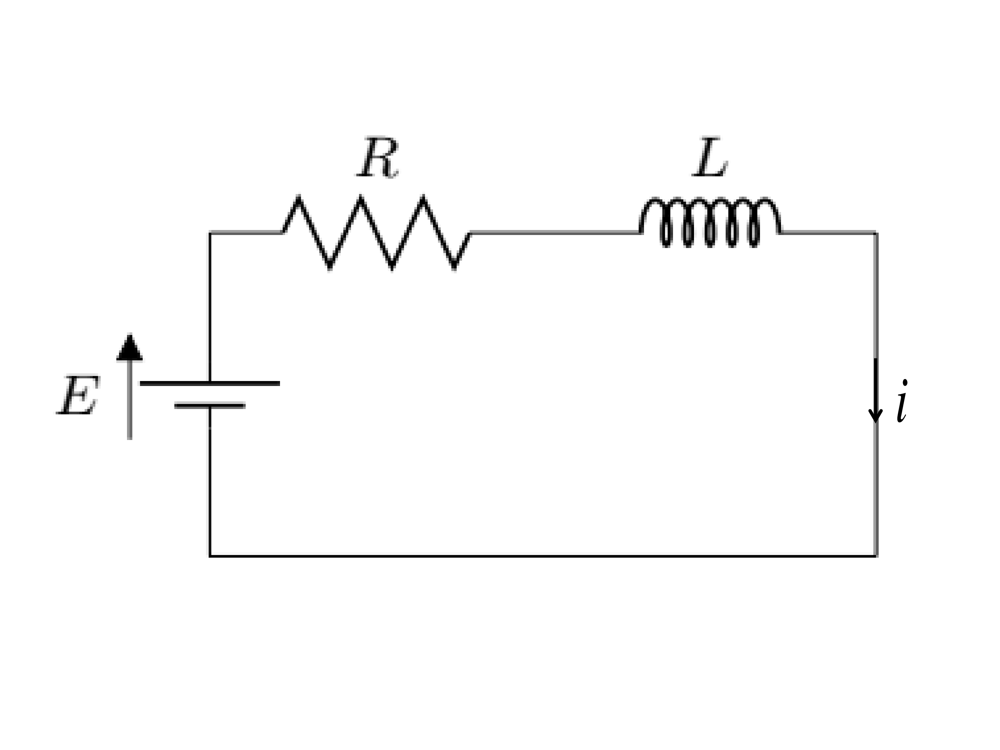

Example 4.2.1.
The current in a circuit, containing a resistance \(R\text{,}\) an induction \(L\text{,}\) and a constant e.m.f. \(E\text{,}\) at time \(t\text{,}\) is given by \(i=\frac{E}{R}\left(1-e^{-\frac{Rt}{L}}\right)\text{.}\) Obtain a suitable approximation to \(i\) when \(t\) is very small.
Solution.
From a circuit

, we have potential drop across resistance \(=iR\) and voltage induced at inductance \(=-L\frac{\,di}{\,dt} \text{.}\) Using Kirchoff's Voltage law,
\begin{equation*}
E-L\frac{\,di}{\,dt} = iR
\end{equation*}
or,
\begin{equation*}
\frac{\,di}{\,dt}+\frac{Ri}{L}=\frac{E}{L}
\end{equation*}
or,
\begin{equation*}
I.F. = e^{\int \frac{R}{L}\,dt}=e^{\frac{Rt}{L}}
\end{equation*}
Its solution is
\begin{equation*}
i\cdot e^{\frac{Rt}{L}} = \int \frac{E}{L}e^{\frac{Rt}{L}}\,dt+C =\frac{E}{L}\cdot\frac{L}{R}e^{\frac{Rt}{L}}+C
\end{equation*}
\begin{equation}
\therefore \quad i=\frac{E}{R}+Ce^{-\frac{Rt}{L}} \tag{4.2.1}
\end{equation}
when \(t=0,\quad i=0 \) then, \(0=\frac{E}{R}+C\) or, \(C=-\frac{E}{R}\text{.}\) Therefore, expression (4.2.1) becomes
\begin{equation*}
i=\frac{E}{R}-\frac{E}{R}e^{-\frac{Rt}{L}} = \frac{E}{R}\left(1-e^{-\frac{Rt}{L}}\right)
\end{equation*}
but, when \(t = \infty,\)
\begin{equation*}
i=\frac{E}{R}. \qquad \text{ans.}
\end{equation*}